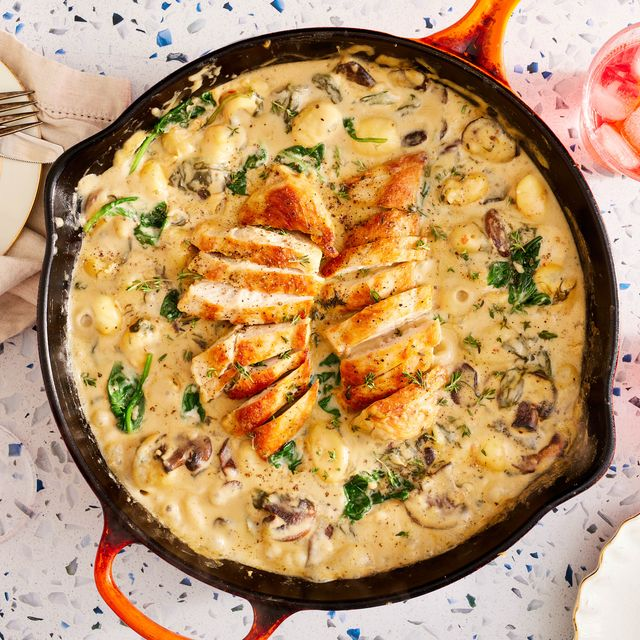

One-Pan Creamy Chicken & Gnocchi

Description
Juicy chicken breast mixed with spinach and mushrooms in a delicious cream sauce.
Ingredients
- 1 1/2 lb. boneless skinless chicken breasts
- Kosher salt
- Freshly ground black pepper
- 2 tbsp. extra-virgin olive oil, divided
- 1 small shallot, diced
- 8 oz. baby bella mushrooms, sliced
- 2 cloves garlic, minced
- 2 tsp. fresh thyme leaves
- 1 tsp. dried oregano
- 1 c. low-sodium chicken broth
- 1 1/4 c. half and half
- Pinch crushed red pepper flakes
- 1 (17-oz.) package gnocchi
- 3/4 c. shredded mozzarella
- 1/2 c. freshly grated Parmesan
- 3 c. packed baby spinach
Directions
- Season chicken on both sides with salt and pepper. In a large skillet over medium-high heat, heat 1 tablespoon oil. Add chicken and cook until golden, 4 minutes per side. Remove from skillet.
- Reduce heat to medium and add remaining 1 tablespoon oil. Add shallot and mushrooms and cook until golden, 5 minutes. Add garlic, thyme, and oregano and cook until fragrant, 1 minute more. Add broth and scrape up any brown bits on bottom of pan, then slowly add in half and half. Bring to a simmer and season with salt, pepper, and a pinch of red pepper flakes. Stir in gnocchi and return chicken to pan. Let simmer until chicken is cooked through and internal temperature reaches 165°, 8 to 10 minutes, stirring occasionally. Remove chicken from skillet.
- Add cheeses and stir until melted, then add spinach and stir until wilted.
- Slice chicken and return to skillet. Season with more salt and pepper to taste.